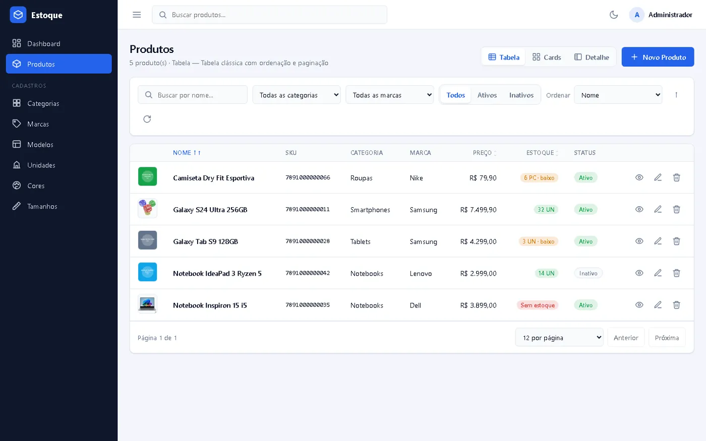
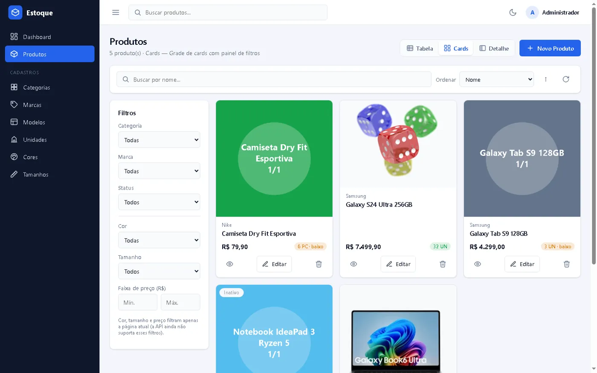
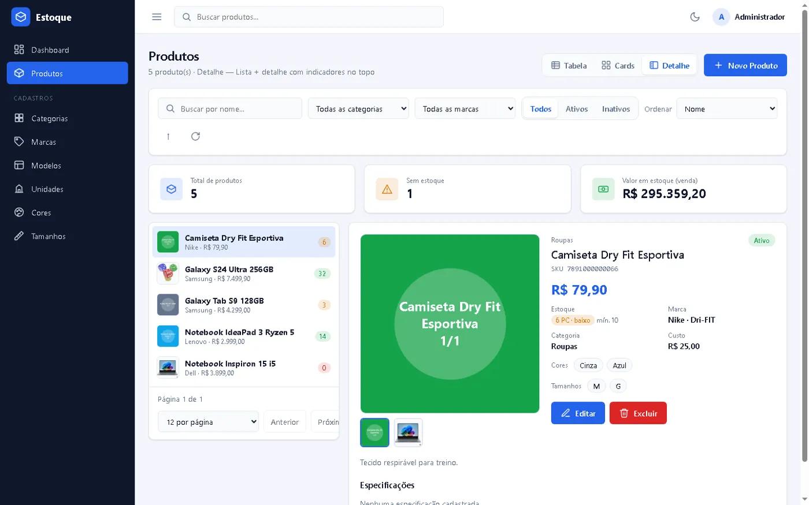
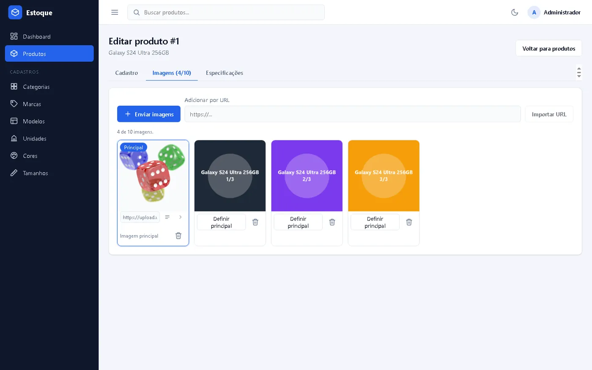
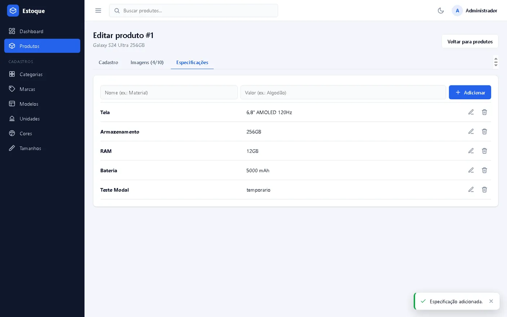
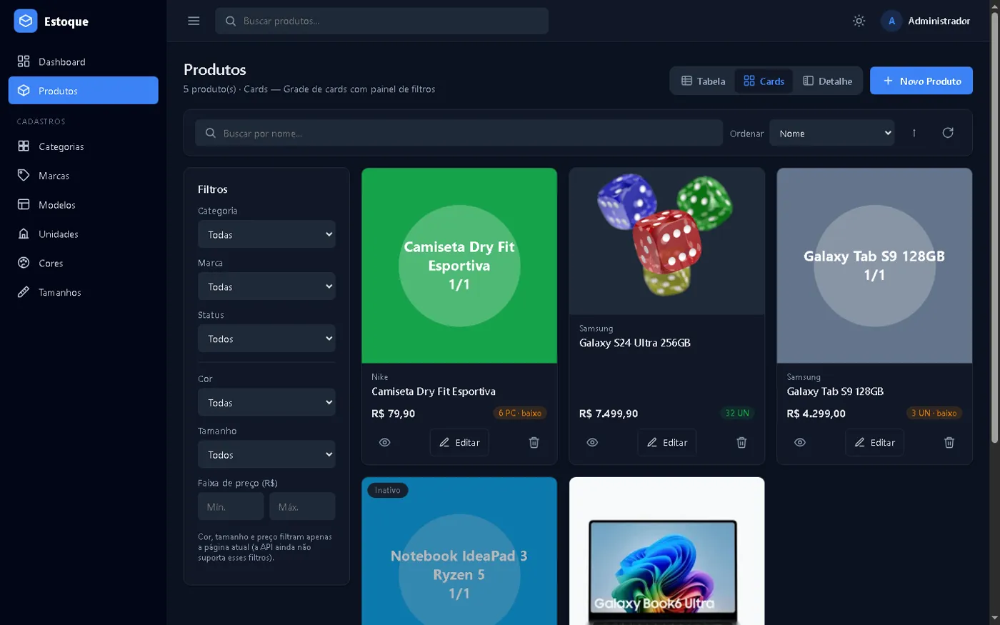
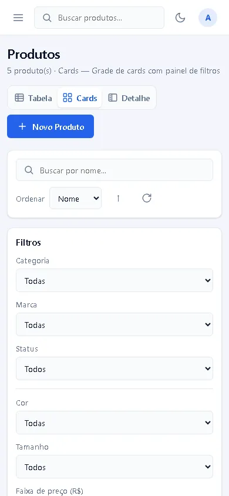

Controle de Estoque
Sistema de controle de estoque em monorepo: API REST em Spring Boot e front-end em Angular, empacotados com Docker e prontos para deploy.
Ver repositórioProblema
Pequenos negócios precisam cadastrar e consultar produtos com fotos, variações e especificações sem planilhas soltas. O Controle de Estoque reúne o catálogo, os cadastros auxiliares e a busca com filtros em uma aplicação web segura e responsiva.
Stack
| Backend | Java 8, Spring Boot 2.5, Spring Security + JWT (HS512), Spring Data JPA, Flyway, Maven |
| Banco | PostgreSQL 16 com migrações versionadas (Flyway) e dados de exemplo |
| Frontend | Angular 22 (standalone components + signals), TypeScript, SCSS, tema claro/escuro |
| Infra | Docker Compose (db, api, web com Nginx), GitHub Actions (CI), render.yaml para deploy no Render |
Principais funcionalidades
Produtos
- Três modos de visualização: Tabela, Cards e Detalhe (lista + painel com indicadores)
- Busca por nome, filtros (categoria, marca, status, cor, tamanho, faixa de preço)
- Ordenação e paginação no servidor
Cadastro
- Formulário em abas: dados gerais, imagens e especificações
- Galeria com até 10 imagens, imagem principal e validação de tipo/tamanho
- Especificações em pares chave/valor
Cadastros auxiliares
- Categorias, marcas, modelos (vinculados à marca), unidades, cores e tamanhos
- Exclusões protegidas: itens em uso retornam 409 com a contagem de vínculos
- Confirmações em modal próprio
Experiência
- Login com JWT e acesso demo configurável
- Tema claro/escuro
- Layout responsivo com menu lateral recolhível no celular
Destaques técnicos
- Testes: 18 testes de integração com JUnit 5, MockMvc e Testcontainers (PostgreSQL 16 real em container).
- CI: GitHub Actions roda os testes da API, o build do front e o build das duas imagens Docker a cada push/PR.
- Configuração em runtime: o container web gera o
config.jsa partir de variáveis de ambiente, sem rebuild. - Deploy: blueprint
render.yamlcria Postgres, API e front no Render. - Licença MIT.
Telas
Capturas do ambiente de testes, com dados fictícios.






